Into the mountains: Early in the morning one last look at Ipanema, then up into the Serra dos Órgãos. Petrópolis lies a good 800 m up and was the summer residence of Brazil's Emperor Pedro II, who had the town founded in 1843; German immigrants settled here from 1845. A stop at Casa do Alemão, a roadside bakery selling bread and apple strudel since 1945. First stop is Palácio Quitandinha: opened in 1944 as South America's largest casino hotel – two years later gambling was banned in Brazil.
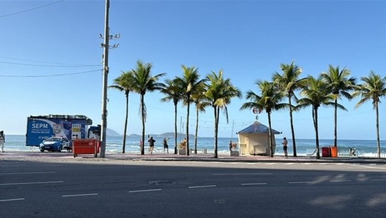
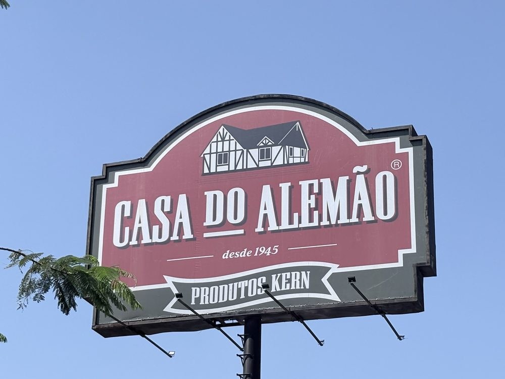
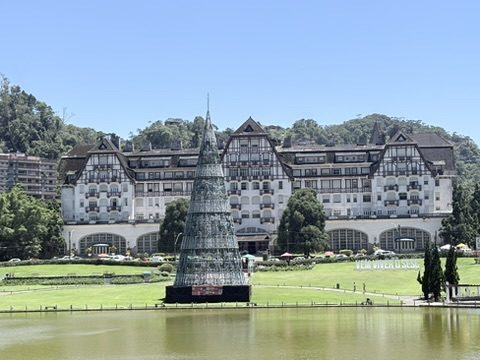
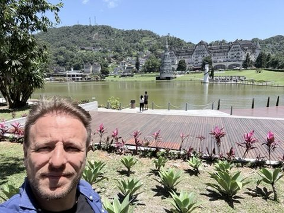
Imperial Museum: Pedro II's pink summer palace is now one of Brazil's most visited museums: furniture, paintings and the imperial crown set with 639 diamonds. Afterwards an Eisenbahn beer in the sun – the town is Brazil's beer capital anyway; the country's oldest brewery, Bohemia, was founded here in 1853.
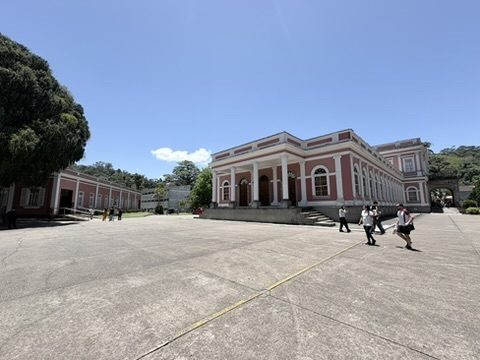
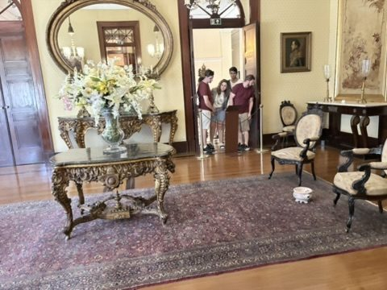
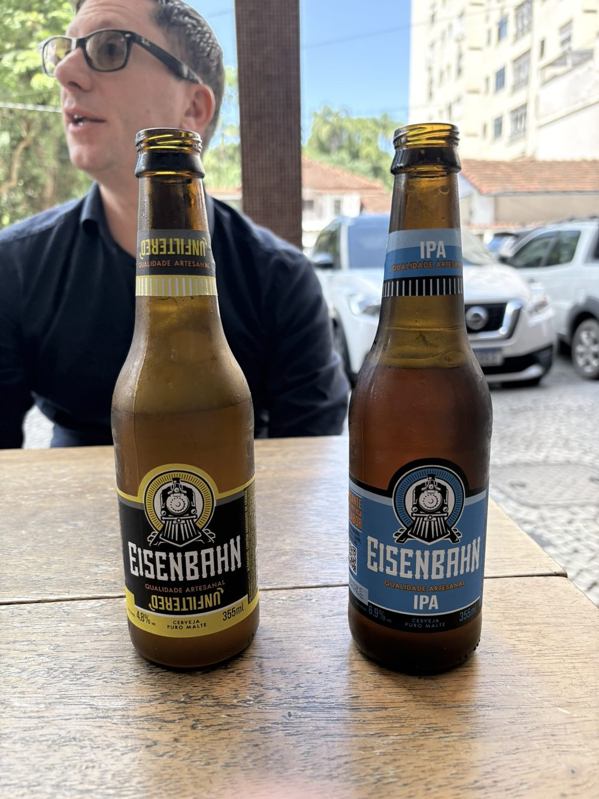
Cathedral and Crystal Palace: The neo-Gothic cathedral of São Pedro de Alcântara was begun in 1884 and only completed in the 20th century; Emperor Pedro II and Empress Teresa Cristina rest in its funeral chapel. A few streets away stands the Palácio de Cristal, a glass palace prefabricated in France in 1884. And fittingly, to round things off: a beer garden.
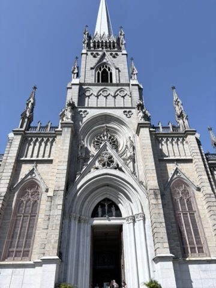
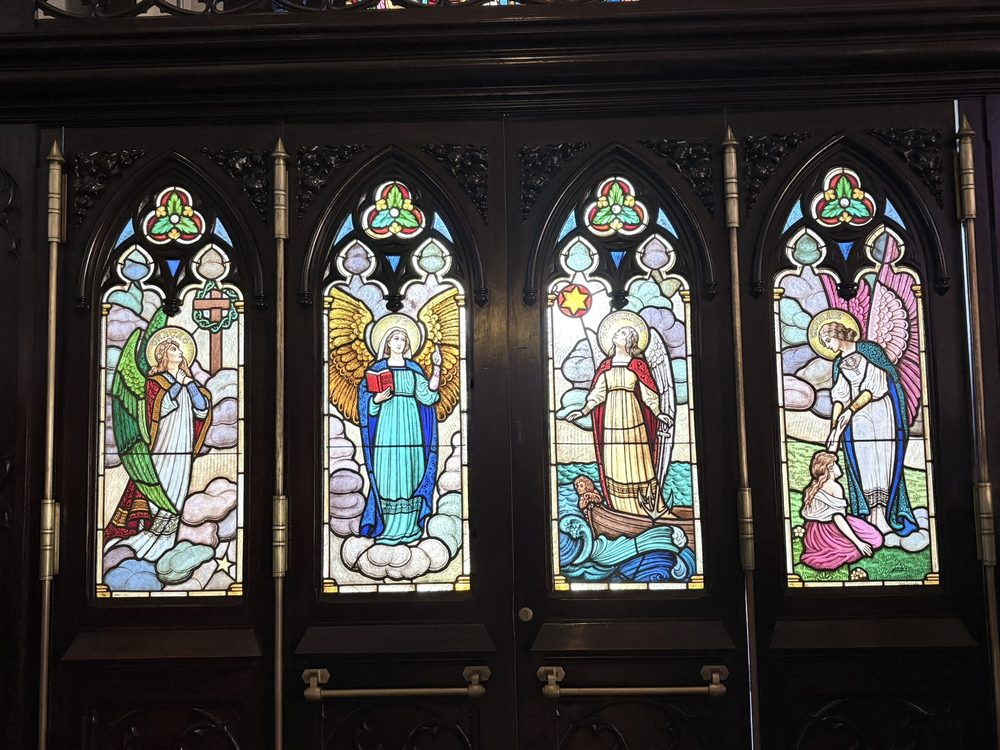
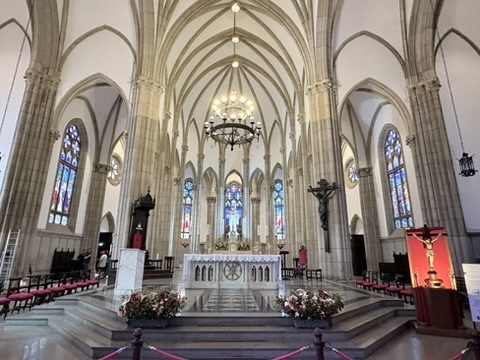
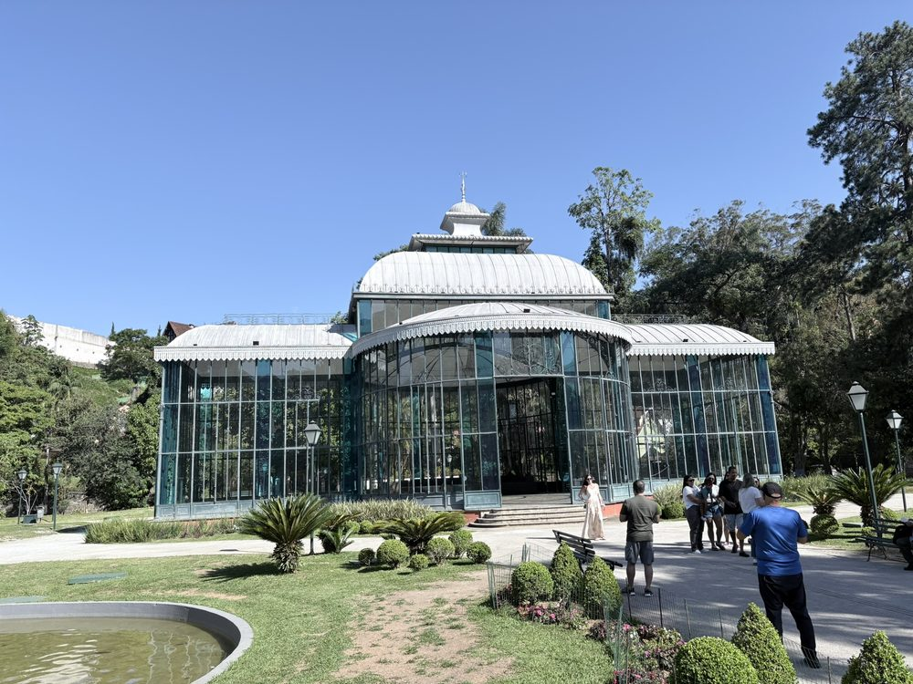
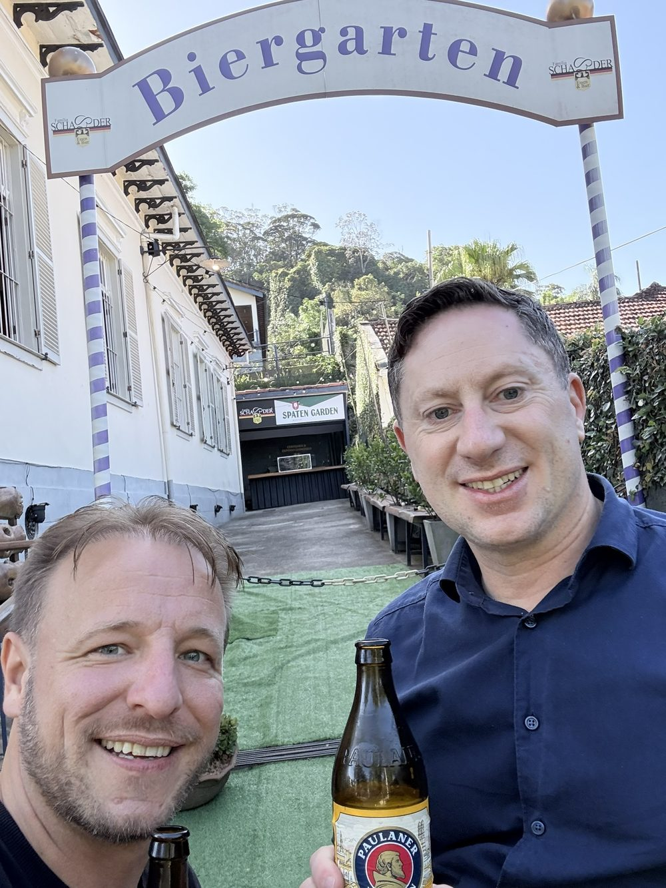
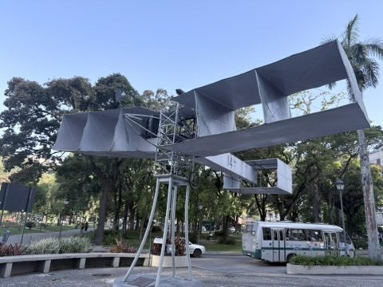
Petrópolis was the adopted home of Alberto Santos-Dumont, whose 14-Bis took off in Paris in 1906 – for Brazilians the first true powered flight.
Last evening: Back on Copacabana: farewell dinner on Avenida Atlântica. On Saturday we fly back to Cologne via Rome.
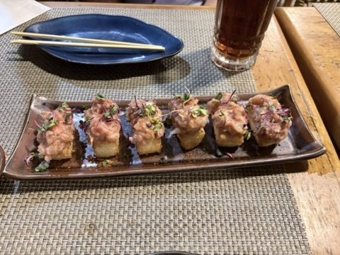
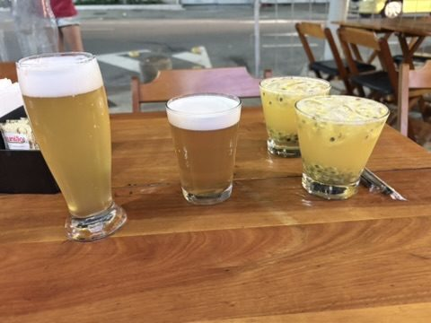